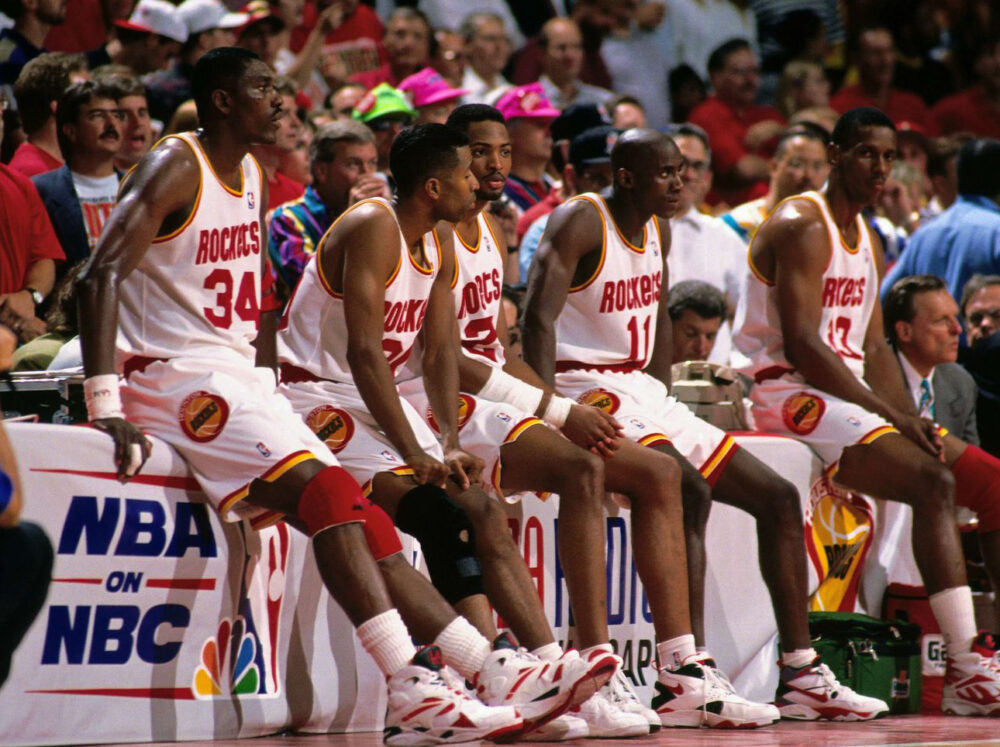

From 1994 to 1995, Hakeem Olajuwon’s Houston Rockets rose to the pinnacle of basketball excellence, powered by his grace, skill, and unshakable determination. “The Dream” anchored the Rockets with a rare blend of footwork, finesse, and ferocity, dominating both ends of the floor like few ever have. With his unstoppable “Dream Shake” and defensive mastery, Hakeem led Houston to back-to-back championships — silencing doubters and conquering a league in transition. Surrounded by sharpshooters and guided by Rudy Tomjanovich’s steady hand, the Rockets embodied resilience, seizing their moment when others faltered. In an era defined by giants, Olajuwon stood tallest — a one-man dynasty who proved that elegance and dominance could coexist in perfect harmony.